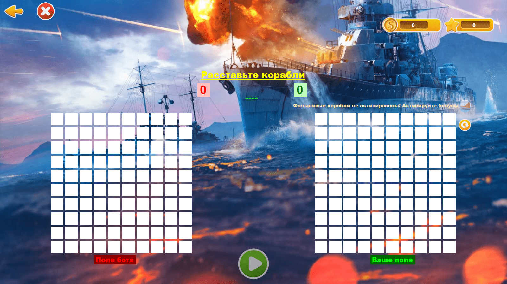
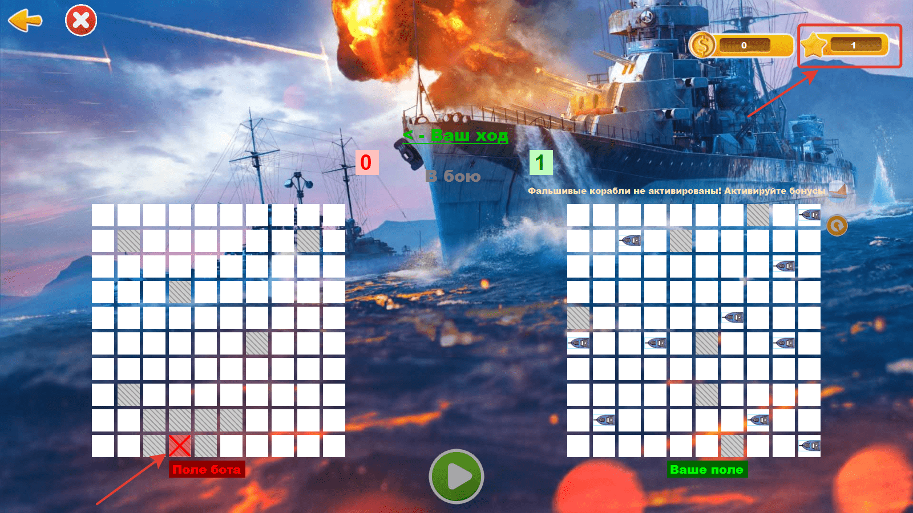
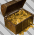
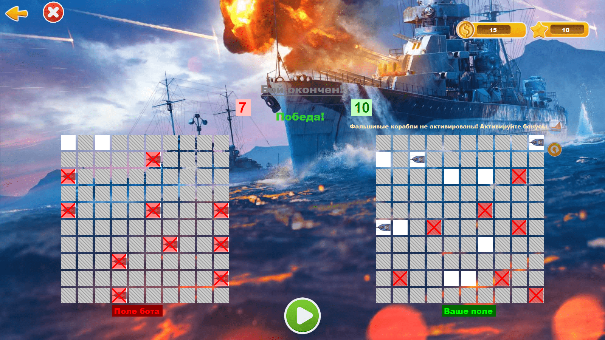

Игра

Здесь ты играешь. Слева - поле противника. Справо - твоё поле. Сейчас ты просто тыкаешь по клеткам на своём поле и тем самым расставляешь корабли. Если тебе лень, то ты можешь нажать на кнопку авторасстановки .
Если у тебя включены бонусы,
то ты можешь поставить фальшивый корабль, нажав на . Кстати, фальшивые корабли можно ставить на свои корабли в качестве защиты.
После того, как расставишь свои корабли, нажимаешь на кнопку . Твой ход первый.
Начинаем играть! Я буду играть без бонусов. За 1 уничтожение дают 1 XP (опыт):

Например, нам нужно срочно выйти и продолжить играть потом, то вы смело можете выйти из игры,
нажав на эту кнопку, тем самым у вас сохранится вся игровая активность и после входа вы можете продолжить играть.
Если вам не нужно сохранять игру, то вы можете нажать на этот крестик, и тем самым после входа в следующий раз вы начнёте игру заново, с самого начала.
Если у тебя включены бонусы, то тебе может попасться "Дополнительный ход" или "Сокровище" Допустим, попался дополнительный ход (бонус) , помимо того, что я нажал на него, я могу сходить дальше.
Или мне попался сундук (бонус)

. В сундуке может быть от 10 до 50 монет! Играем дальше! Бой завершится, когда у противника или у вас достигнет 10 уничтожений.
Вот и закончился бой. За выигрышь дают 15 монет, за проигрышь 4 монеты.

Вы можете выйти из игры, нажав на или на .
Подробнее об этих кнопках можно почитать здесь.
БОЙ
Сколько платят за бой?
За бой платят XP и монеты. За 1 уничтожение дают 1 XP (опыт). Получается, если вы уничтожите все корабли, вы получите 10 XP.
За выигрышь дают 15 монет, за проигрышь 4 монеты. Ещё монеты дают за сундук от 10 до 50 монет (если у вас включены бонусы).
Кнопка авторасстановка кораблей
Если тебе лень, то ты можешь нажать на кнопку авторасстановки .
После того, как расставишь, нажимаешь на кнопку .
Если вы проигрываете, то включается сирена. Она работает несколько секунд (12 секунд). Если вы её больше не хотите слышать, то её можно отключить в магазине (настройках).
Ходы
Если вы промахнулись, то следующий ход - противника. И если противник промахнулся, то следующий ход - ваш.
Если вы попали в противника, то следующий ход - ваш. И если противник попал в вас, то следующий ход - его. Всё также как и в обычной настольной игре.
РАБОТАЮТ ТОЛЬКО ПРИ ВКЛЮЧЕННОЙ ФУНКЦИИ В МАГАЗИНЕ
Когда они выпадают?
Бонусы могут попасться, а могут и не попасться. Тут всё зависит от количества уничтожений и везучести.
В среднем они попадаются в каждом 2-ом бою, но не все сразу. Может быть так, что вам попадётся только один из двух.
"Бонус - Фальшивый корабль"
Если у тебя включены бонусы,
то ты можешь поставить фальшивый корабль, нажав на . Если вы ставите фальшивый корабль, то у противника он тоже будет иметься, в отличии от других бонусов.
Остальные бонусы (сокровище и дополнительный ход) у противника иметься не будут.
Если у тебя включены бонусы,
то ты в бою можешь попасть на Дополнительный ход. Если тебе попался дополнительный ход (бонус)
. Помимо того, что ты нажмёшь на него, ты сможешь сходить дальше. Этот бонус у противника не имеется.
Если у тебя включены бонусы,
то ты в бою можешь попасть на Сокровище. Если тебе попался сундук (бонус, сокровище) , то тебе зачисляются монеты. В сундуке может быть от 10 до 50 монет!
Всё зависит от количества уничтоженных кораблей противника и твоей везучести. Обычно каждый 3-тий бой попадается сундук с монетами (сокровища). Этот бонус у противника не имеется.
Например, нам нужно срочно выйти и продолжить играть потом. Для этого и были созданы две кнопки. Вы смело можете выйти из игры,
нажав на эту кнопку, тем самым у вас сохранится вся игровая активность и после входа вы можете продолжить играть.
Если вам не нужно сохранять игру, то вы можете нажать на этот крестик, и тем самым после входа в следующий раз вы начнёте игру заново, с самого начала.
Кнопка отвечает за начало боя и за очистку полей, для начала игры заново (после окончания предыдущего боя).